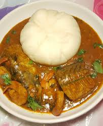

Ogbono Soup

Decription
Ofe Ogbono is a popular dish mainly amongst the Igbo People from the Estern part of Nigeria,
it is popular in Nigeria and can be served with any swallow but mostly served with fufu
and can be served in ocassions.
Ogbono Soup
- Ugu Leaves
- Oil
- Salt, Oil & Maggi
- Okpeye
- Uziza Leaves
- Meat & Fish
- Cryfish
- Fresh Okoro
- Obono
Steps
- Mix the Ogbono and oil in a plate
- Cook the Meat & Fish till it become soft to preferance
- Pound pepper and one bulb of onion or blend it
- Add 3 cubes of maggi & salt to taste
- Remove the cooked meat and Fish from the pot
- Add the Cryfish, a cube of maggi, the mixture of pepper and onion, Okpeye, Oil and salt to tast
- Afer the water is boiling add the mixed Ogbono and oil.
stir the whole thing till well mixed then add chopped okro
- Add the Meat and Fish after few minute add sliced ugwu leaves & Uziza leaves
- Allow to mix up for a minute or 2 remove from heat and serve with any swallow of your choice.